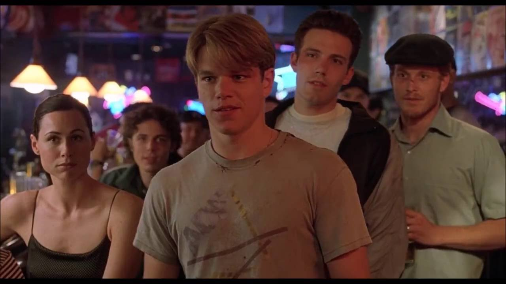

About Speech Easy
Speech Easy was founded in February 2020 by Jordyn Doyle. Doyle was determined to open their own speech
therapy clinic to help those of all ages be able to tackle life with the best algnauge skills they can have.
Inspired by their significant other, who engaged in speech therapy at a young age and has acheived amazing success in
life, Doyle is determined to give that to others. Working along a small staff of hard-working speech
therapists, Doyle is able to recognize their dream every day. The staff at Speech Easy is dedicated to their
clients, creating unique, personable treatment plans for each person. We also go to various schools to
provide screenings for children to catch hearing & speech difficulties early. We are dedicated to help you
and your loved ones. Please explore our website and learn about us. Feel free to contact us about anything our
website didn't provide enough information about.
